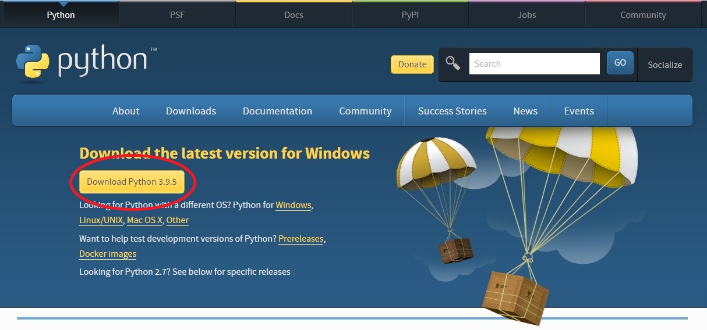

Lekce 01
V Lekci 01 si nainstalujeme python a editor.
Instalace pythonu na Windows:
Jdeme na adresu python.org.
Klikneneme na Downloads.(viz obrázek)

Zobrazí se tato stránka:

Klikni na Download Python X.X.X.
Stáhne se instalátor Pythonu. Spusť ho. Nazapomeň na první obrazovce kliknout na Add Python to PATH.
A Python máš nainstalovaný.